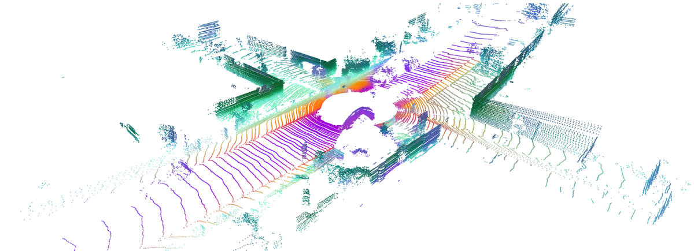

R3DPA
简单摘要
这篇工作要解决的问题是：LiDAR 场景合成是解决自动驾驶等机器人任务 3D 数据稀缺问题的新兴解决方案。
对应的核心做法是：最近的方法采用扩散或流动匹配模型来生成逼真的场景，但与具有数百万个样本的 RGB 数据集相比，3D 数据仍然有限。
从机制上看，关键设计在于：我们推出了第一个 LiDAR 场景生成方法，用于解锁 LiDAR 点云的图像预训练先验，并利用自监督 3D 表示来获得最先进的结果。
训练或推理层面的重点是：具体来说，我们 (i) 将生成模型的中间特征与自监督 3D 特征对齐，这大大提高了生成质量；。
实验层面的主要信号是：(ii) 将知识从大规模图像预训练生成模型转移到 LiDAR 生成，从而缓解 LiDAR 数据集有限的问题；。

简而言之，这篇论文关注的核心是：这篇工作要解决的问题是：LiDAR 场景合成是解决自动驾驶等机器人任务 3D 数据稀缺问题的新兴解决方案。 对应的核心做法是：最近的方法采用扩散或流动匹配模型来生成逼真的场景，但与具有数百万个样本的 RGB 数据集相比，3D 数据仍然有限。 从机制上看，关键设计在于：我们推出了第一个 LiDAR…
这篇工作要解决的问题是：自动驾驶依赖于车辆安全高效地在复杂环境中行驶的能力。
对应的核心做法是：在摄像头、GPS 或雷达等各种传感器中，LiDAR 因其对车辆、行人和可驾驶区域的精确 3D 测量而脱颖而出，成为关键传感器。
从机制上看，关键设计在于：然而，收集和注释现实世界的大规模激光雷达点云数据集非常昂贵且耗时，限制了可扩展自动驾驶系统的开发。
训练或推理层面的重点是：当考虑 LiDAR 传感器密度的变化时，挑战变得更加严峻，因为每种变化都需要自己的广泛数据集。
实验层面的主要信号是：这些挑战激发了对生成合成 LiDAR 数据集的研究，包括虚拟环境中的 LiDAR 模拟以及生成学习方法。
核心创新
综合引言与方法部分，这篇论文的核心创新可以概括为以下几方面：
1）问题定义与研究动机
这篇工作要解决的问题是：自动驾驶依赖于车辆安全高效地在复杂环境中行驶的能力。
对应的核心做法是：在摄像头、GPS 或雷达等各种传感器中，LiDAR 因其对车辆、行人和可驾驶区域的精确 3D 测量而脱颖而出，成为关键传感器。
从机制上看，关键设计在于：然而，收集和注释现实世界的大规模激光雷达点云数据集非常昂贵且耗时，限制了可扩展自动驾驶系统的开发。
训练或推理层面的重点是：当考虑 LiDAR 传感器密度的变化时，挑战变得更加严峻，因为每种变化都需要自己的广泛数据集。
实验层面的主要信号是：这些挑战激发了对生成合成 LiDAR 数据集的研究，包括虚拟环境中的 LiDAR 模拟以及生成学习方法。
2）方法框架与核心模块
这篇工作要解决的问题是：我们的目标是通过将丰富的 3D 表示与从大规模图像数据集中学习的预训练 RGB 图像先验相结合来增强 3D LiDAR 场景生成。
对应的核心做法是：为了利用从大规模 RGB 图像数据集中学到的知识，我们使用在此类数据上预训练的权重来初始化潜在 FM 模型。
从机制上看，关键设计在于：然而，由于自然图像潜在和范围图像潜在之间的域差距，直接从预训练权重进行微调会导致先验知识的崩溃。
训练或推理层面的重点是：为了解决这个问题，我们引入了 VAE 对齐训练方法，该方法以 3D 表示对齐为指导，以实现跨模态适应。
实验层面的主要信号是：我们称之为统一框架，它对范围图像进行操作，同时利用自然图像的 2D 先验和 3D 表示对齐。
3）实验设计与工程价值
这篇工作要解决的问题是：我们在 KITTI-360 数据集上进行了最先进的比较和消融实验。
对应的核心做法是：KITTI-360 包含使用 64 束 LiDAR 传感器在德国卡尔斯鲁厄郊区收集的图像和 LiDAR 扫描，包括来自 9 个序列的约 80k 扫描。
从机制上看，关键设计在于：对于 LiDAR 场景生成，我们遵循先前作品中使用的标准数据集分割。
训练或推理层面的重点是：为了预训练流匹配 (FM) 模型，我们使用 ImageNet-1k，其中包含超过 100 万张图像。
实验层面的主要信号是：我们使用 ScaLR 的 3D 自监督功能，它属于最先进的 LiDAR 自监督骨干网之一。
技术细节
下面按照论文的方法章节结构展开，重点说明模型的关键模块、公式设计和训练策略。
这篇工作要解决的问题是：我们的目标是通过将丰富的 3D 表示与从大规模图像数据集中学习的预训练 RGB 图像先验相结合来增强 3D LiDAR 场景生成。
对应的核心做法是：为了利用从大规模 RGB 图像数据集中学到的知识，我们使用在此类数据上预训练的权重来初始化潜在 FM 模型。
从机制上看，关键设计在于：然而，由于自然图像潜在和范围图像潜在之间的域差距，直接从预训练权重进行微调会导致先验知识的崩溃。
训练或推理层面的重点是：为了解决这个问题，我们引入了 VAE 对齐训练方法，该方法以 3D 表示对齐为指导，以实现跨模态适应。
实验层面的主要信号是：我们称之为统一框架，它对范围图像进行操作，同时利用自然图像的 2D 先验和 3D 表示对齐。
$$ \begin{pmatrix} i \\ j \end{pmatrix} = \begin{pmatrix} \left( 1 - \left( \arcsin(p_z/ r) + f_{\text{down}} \right) f_v^{-1} \right) H \\ \frac{1}{2}\left(1 - \arctan(p_y/p_x) \pi^{-1}\right) W \end{pmatrix} $$
这条公式用于定义模型中的核心计算关系：左侧给出目标量，右侧由输入与参数共同决定。阅读时可先关注 i、j、p_z、r 的物理/几何含义，再看它们如何影响训练目标或渲染结果。
$$ \mathcal{L}_{\textrm{Alignment}}(\theta,\phi) = -\mathbb{E} \Bigg[ \frac{1}{H} \frac{1}{W} \sum_{j=1}^H \sum_{i=1}^W \langle y_{(i,j)}, y_{(i,j)}^t \rangle \Bigg], $$
这条公式用于定义模型中的核心计算关系：左侧给出目标量，右侧由输入与参数共同决定。阅读时可先关注 L、E、H、W 的物理/几何含义，再看它们如何影响训练目标或渲染结果。



把全文方法串起来看，这篇论文的逻辑基本都遵循同一条主线：先把输入组织成更容易处理的表示，再通过模型结构和损失函数把这个表示推向目标输出，最后用可视化与数值实验共同证明该设计有效。
实验结论
实验部分主要回答两个问题：第一，方法是否真的优于已有基线；第二，这种优势来自哪一个设计决策。
这篇工作要解决的问题是：我们在 KITTI-360 数据集上进行了最先进的比较和消融实验。
对应的核心做法是：KITTI-360 包含使用 64 束 LiDAR 传感器在德国卡尔斯鲁厄郊区收集的图像和 LiDAR 扫描，包括来自 9 个序列的约 80k 扫描。
从机制上看，关键设计在于：对于 LiDAR 场景生成，我们遵循先前作品中使用的标准数据集分割。
训练或推理层面的重点是：为了预训练流匹配 (FM) 模型，我们使用 ImageNet-1k，其中包含超过 100 万张图像。
实验层面的主要信号是：我们使用 ScaLR 的 3D 自监督功能，它属于最先进的 LiDAR 自监督骨干网之一。


- 方法在核心指标上的优势与结构设计和训练目标直接相关；
- 消融实验表明，拿掉关键模块后性能与结果质量都有明显回落；
- 论文不仅比较数值，也关注可视化质量、稳定性和泛化能力等更贴近真实使用的信号。
理解评价
这篇工作要解决的问题是：在这项工作中，我们介绍了第一个无条件 LiDAR 点云生成方法，该方法集成了 RGB 图像预训练先验和自监督 3D 表示。
对应的核心做法是：我们提出的训练策略从大规模图像流匹配模型中转移知识，补偿 LiDAR 数据集的有限规模，同时与自监督 3D 特征的表示对齐进一步提高了生成质量。
从机制上看，关键设计在于：除了合成之外，我们的特征引导训练还可以在推理时进行可控编辑，我们在对象修复和场景混合方面首次展示了有希望的结果。
训练或推理层面的重点是：我们相信这个轴将激发进一步的研究。
实验层面的主要信号是：另一个有希望的下一步是利用这些代进行下游任务，例如激光雷达分割。
如果把它当成研究参考，建议重点关注三件事：第一，这套方法真正依赖的归纳偏置是什么；第二，实验中真正拉开差距的模块是哪一个；第三，它的局限究竟来自数据、算力还是监督信号本身。
以下相关论文可以作为进一步追踪的入口：